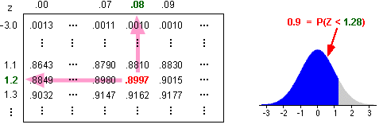

Finding an x-value from a probability
The previous pages explained how to find the probability that a value from a normal distribution will be less than some value, x.
In some circumstances, we must solve the inverse problem — we are given a probability and must find the value x such that there is this probability of being less.
Terminology
Weights of apples
The diagram below shows the distribution of weights of Fuji apples arriving at a packhouse. The distribution is normal (µ = 180g, σ = 10g).
The slider translates apple weights, x, into z-scores and uses the z-scores to find the probability of getting an apple with weight less than x.
The largest 10% of apples will be sold
for export. How large will these apples be? |
This question wants the weight, x, such that
P ( Apple weight < x ) = 0.9
Adjust the slider to make the probability 0.9.
Finding quantiles
The above 'trial-and-error' method of finding a quantile involves trying different x-values until the target probability is attained.
x z-score probability
A better method performs the inverse operations directly,
probability z-score x
The first step of this process involves finding the z-score for which there is the required probability of being less. Statistical software or Excel can evaluate this z-value, or statistical tables can be used. For example, the diagram below shows how to find the z-score such that there is probability 0.9 of being less.

Translating from a z-score to the corresponding x-value is done with the formula,
x = μ + z σ
(Remember that the z-score tells you how many standard deviations you are from the mean.)
Weights of apples
The diagram below shows the distribution of weights of Fuji apples arriving at a packhouse. The distribution is normal (µ = 180g, σ = 10g).
Use the slider to find the z-score corresponding to any probability. (The computer does the calculation, but normal tables could alternatively be used as described above.)
The z-score is then translated into an apple weight.